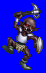
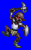
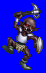
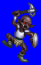

Height: 30-150 cm Weight: 20-140 lbs.
Habitat: Mountains, caves Origin: France, England
Meaning: From the greek "kobalos", meaning "fairy child"
This "little ogre" has been portrayed in many ways over the centuries. It was first portrayed as a harmless fairy child, as suggested by its greek etymology. Seventeenth century puritanism changed the word's meaning to that of a demonic figure that acquired its grotesque features as a result of mistreatment by a merciless overseer. In games, goblins are typically weak monsters encountered at the beginning of the game.
See also: Kobold